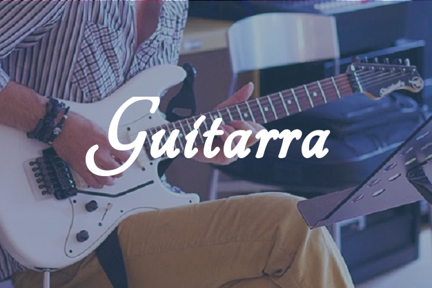
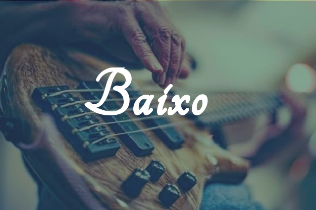

Nossos Cursos

- 
- 
A Escola de Música Centro Musical Serafim é uma instituição reconhecida e respeitada na área da educação musical. Localizada na cidade de Suzano com um corpo docente qualificado e com muito amor e simplicidade no ensino, a escola oferece uma ampla variedade de cursos e programas para alunos de todas as idades e níveis de habilidade. Em conjunto das aulas práticas é explanado sobre a teoria musical, composição e tecnologia musical.
Com um ambiente acolhedor e estimulante, a Centro Musical Serafim incentiva os alunos a explorarem sua paixão pela música e desenvolverem seu próprio estilo. É um local onde a música ganha vida e transforma vidas.


Rua Antonio Renzi Primo, 95, Vila Adelina, Suzano/SP.